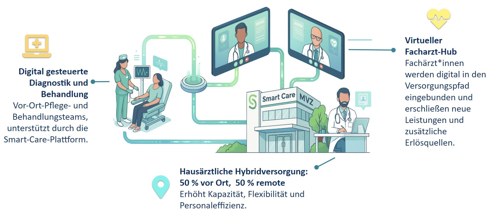

Ausschließlich für eingeladene Investoren.
Smart Care baut das hybride MVZ-Netzwerk der Zukunft – dort, wo Hausarztversorgung am dringendsten gebraucht wird. Bewährtes Modell. Echte Standorte. Klarer Wachstumspfad.
Die ambulante Versorgung in Deutschland bricht strukturell zusammen. Für Investoren ist das eine generationale Chance.
Das Smart Care MVZ verbindet physische Präsenz mit digitaler Reichweite – mehr Patienten, niedrigere Kosten, schnelleres Wachstum.

Qualifizierte Pflegefachkräfte führen Diagnostik durch und betreuen Patienten direkt. 50% der Versorgung physisch.
Fachärzte werden digital in den Versorgungspfad eingebunden – neue Leistungen und Erlösquellen ohne Mehrinfrastruktur.
Automatisierte Abläufe, digitale Dokumentation, KI-Optimierung – zentral für alle Standorte gebündelt.
Wir bauen das virtuelle MVZ von unten nach oben: Hausarztpraxen schaffen das Patientenfundament – Fachärzte multiplizieren Erlöse und Reichweite.
Klicke auf einen Standort für Details – Versorgungslage, Kennzahlen und Fotos.
Profitabel auf Praxisebene, skalierbar in der Struktur, bereit für die nächste Wachstumsphase.
Smart Care skaliert über Praxiszukäufe. Eigenkapital treibt Tech & Team, Fremdkapital finanziert Akquisitionen.
Diese Fragen stellen sich Menschen täglich – und zeigen genau, warum Smart Care gebraucht wird.
Termin vereinbaren oder direkt Kontakt aufnehmen.